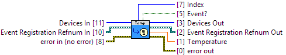

TemperatureChangeTrigger has been set to a non-zero value, the TemperatureChange event will not occur until the temperature has changed by at least the TemperatureChangeTrigger value.
Device Support:1045_0 (ver: 100, 101) Temperature Sensor (IR) : Supported
1045_1 (ver: 101) Temperature Sensor (IR) : Supported
1045_0 (ver: 100, 101) Temperature Sensor (IC) : Supported
1045_1 (ver: 101) Temperature Sensor (IC) : Supported
1048_0 (ver: 100, 101, 102) Thermocouple Input : Supported
1048_0 (ver: 100, 101, 102) Temperature Sensor (IC) : Supported
1051_0 (ver: 100) Thermocouple Input : Supported
1051_0 (ver: 100) Temperature Sensor (IC) : Supported
1051_0 (ver: 200, 201, 202) Thermocouple Input : Supported
1051_0 (ver: 200, 201, 202) Temperature Sensor (IC) : Supported
1051_1 (ver: 300) Thermocouple Input : Supported
1051_1 (ver: 300) Temperature Sensor (IC) : Supported
1051_2 (ver: 400, 401, 402) Thermocouple Input : Supported
1051_2 (ver: 400, 401, 402) Temperature Sensor (IC) : Supported
DCC1000_0 (ver: 115) Temperature Sensor : Supported
DCC1000_0 (ver: 204, 205, 206) Temperature Sensor : Supported
DCC1100_0 (ver: 113, 114) Temperature Sensor : Supported
HUM1000_0 (ver: 104, 105) Temperature Sensor : Supported
SAF1000_0 (ver: 101, 102) Temperature Sensor : Supported
TMP1000_0 (ver: 105, 107) Temperature Sensor (IC) : Supported
TMP1100_0 (ver: 103, 105) Thermocouple Input : Supported
TMP1100_0 (ver: 103, 105) Temperature Sensor (IC) : Supported
TMP1101_0 (ver: 104, 106) Thermocouple Input : Supported
TMP1101_0 (ver: 104, 106) Temperature Sensor (IC) : Supported
TMP1200_0 (ver: 104, 105, 106) RTD input : Supported
|
|
error in (no error) error in can accept error information wired from VIs previously called. |

|
|
status status is TRUE (X) if an error occurred or FALSE (checkmark) to indicate a warning or that no error occurred. Right-click the error in control on the front panel and select Explain Error or Explain Warning from the shortcut menu for more information about the error. |

|
|
code code is the error or warning code. Right-click the error in control on the front panel and select Explain Error or Explain Warning from the shortcut menu for more information about the error. |

|
|
source source describes the origin of the error or warning. Right-click the error in control on the front panel and select Explain Error or Explain Warning from the shortcut menu for more information about the error. |

|
|
Devices In A list of devices registered for the same type of event |

|
|
Device In Device # Identification |

|
|
Event Registration Refnum In Event # Identification |

|
|
error out error out passes error or warning information out of a VI to be used by other VIs. |

|
|
status status is TRUE (X) if an error occurred or FALSE (checkmark) to indicate a warning or that no error occurred. Right-click the error out indicator on the front panel and select Explain Error or Explain Warning from the shortcut menu for more information about the error. |

|
|
code code is the error or warning code. Right-click the error out indicator on the front panel and select Explain Error or Explain Warning from the shortcut menu for more information about the error. |

|
|
source source string describes the origin of the error or warning. Right-click the error out indicator on the front panel and select Explain Error or Explain Warning from the shortcut menu for more information about the error. |

|
|
Event? Returns TRUE if the event has executed, or FALSE otherwise. |
|
Devices Out Same as Devices In |
|
|
Device Out Same as Device In |

|
|
Index The index of the device that triggered the event within the Devices In array. |
|
|
Temperature The temperature |

|
|
Event Registration Refnum Out Same as Event Registration Refnum In |